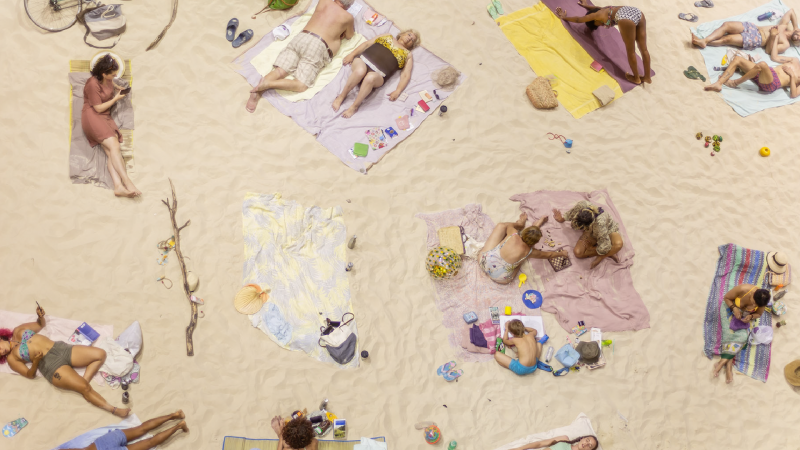

10/01/2024 - 20hs
PIXAR EN CONCIERTO
¡Nuevas funciones!

10/03/2024 - 21hs
SUN AND SEA
OPERA

10/01/2024 - 20hs
10/01/2024 - 20hs
10/03/2024 - 21hs
10/01/2024 - 20hs
El Teatro Colón es un teatro de ópera de la Ciudad Autónoma de Buenos Aires, la capital de Argentina. Por su tamaño, acústica1 y trayectoria, ha llegado a ser considerado como uno de los mejores teatros líricos del mundo. Según una encuesta realizada por el experto en acústica Leo Beranek a destacados directores internacionales de ópera y de orquesta, el Teatro Colón posee la sala con la mejor acústica para ópera y la segunda mejor para conciertos del mundo. Este teatro se realizó con el objetivo de contribuir a la integración de la cultura de inmigrantes, a la vez de cumplir la función de ser una suerte de centro cívico - social. La Ópera estaba de moda y la idea era levantar allí el mejor teatro del país, ya que el viejo Coliseo y el Victoria eran salas que no estaban a la altura de las nuevas pretensiones. El Teatro Colón fue, desde su creación, el lugar de reunión preferido por la oligarquía porteña.